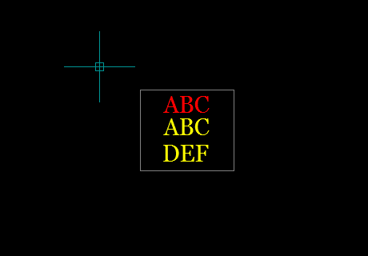
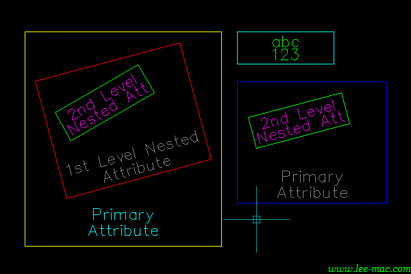

Burst Upgraded
This page is delivered for consistency purposes only, as part of the LeeMac sample module of DynALisp, which shows how DynALisp turns existing AutoLISP programs into a module. The program and its description are the work of Lee Mac, who keeps all the credit for them. The original page, with the latest version, is on Lee Mac's website: https://lee-mac.com/upgradedburst.html
| Function Syntax | LM-BurstUpgraded – original syntax: pburst / nburst (see aliases) |
| Current Version | 1.7 |
| Compatible with AutoCAD for Mac? | No |
| Compatible with AutoCAD LT? | Yes |
| Original Page | lee-mac.com/upgradedburst.html |
Program Description
This program operates in much the same way as the familiar Express Tools' BURST command, however invisible block attributes are not displayed with the resulting exploded components and the user may also burst nested blocks found within the selected blocks, nested to any level.
For those unfamiliar with the standard AutoCAD Express Tools' BURST command, a burst operation involves exploding a given block reference and converting any attribute references to text, hence retaining the attribute values.
Primary Burst (pburst)
This command enables the user to burst a selection of primary block references, without bursting any nested block references found within.
Following a valid selection of blocks to burst, the program converts all visible single-line & multi-line attributes into single-line text (DText) and multiline text (MText) respectively, before proceeding to explode the block, and deleting the original attribute objects.
The methods used by the program should also perform much faster & more efficiently than those used by the Express Tools' Burst.lsp.
Demonstration

Nested Burst (nburst)
This additional command enables the user to burst a selection of block references, including any nested block references found within the selected blocks, nested to any level.
As with the pburst command described above, following a valid selection of blocks to burst, the program will iterate over the selection and will convert all visible single-line & multi-line attributes into text and MText objects respectively; however, the program will then iterate over the exploded block components and will recursively process any nested block references encountered.
Demonstration

Bundled program notes
;;------------------------=={ Burst Upgraded }==------------------------;;
;; ;;
;; This program operates in much the same way as the familiar ;;
;; Express Tools' Burst command, however invisible block attributes ;;
;; are not displayed with the resulting exploded components. ;;
;; ;;
;; Following a valid selection of blocks to burst, the program ;;
;; converts all visible single-line & multi-line attributes into Text ;;
;; and MText respectively, before proceeding to explode the block, ;;
;; and deleting the original attribute objects. ;;
;; ;;
;; The core function accepts a selection set argument and may hence ;;
;; be called from within other custom programs to burst all blocks ;;
;; in a supplied selection set. ;;
;; ;;
;; The methods used by the program should also perform much faster & ;;
;; more efficiently than those used by the Express Tools' Burst.lsp. ;;
;;----------------------------------------------------------------------;;
;; Author: Lee Mac, Copyright © 2010 - www.lee-mac.com ;;
;;----------------------------------------------------------------------;;
;; Version 1.0 - 2010-11-25 ;;
;; ;;
;; - First release. ;;
;;----------------------------------------------------------------------;;
;; Version 1.1 - 2013-08-29 ;;
;; ;;
;; - Program entirely rewritten. ;;
;;----------------------------------------------------------------------;;
;; Version 1.2 - 2014-02-23 ;;
;; ;;
;; - Program restructured to accept selection set argument. ;;
;; - Program now also explodes non-attributed blocks. ;;
;;----------------------------------------------------------------------;;
;; Version 1.3 - 2015-10-31 ;;
;; ;;
;; - Program modified to account for non-uniformly scaled blocks. ;;
;; - Command syntax changed to 'myburst'. ;;
;;----------------------------------------------------------------------;;
;; Version 1.4 - 2018-01-06 ;;
;; ;;
;; - Program modified to retain visible constant attributes. ;;
;; - Corrected LM:usblock-p function to account for mirrored blocks. ;;
;;----------------------------------------------------------------------;;
;; Version 1.5 - 2018-07-09 ;;
;; ;;
;; - Accounted for multiline attributes whose text content occupies ;;
;; multiple group 1 & 3 DXF groups. ;;
;;----------------------------------------------------------------------;;
;; Version 1.6 - 2018-12-10 ;;
;; ;;
;; - Accounted for invisible objects created when bursting dynamic ;;
;; blocks with visibility states. ;;
;; - Fixed bug causing attributes with transparency to be removed. ;;
;; - Integrated Nested Burst program. ;;
;;----------------------------------------------------------------------;;
;; Version 1.7 - 2018-12-22 ;;
;; ;;
;; - Accounted for nested xrefs (excluding them from burst operation). ;;
;;----------------------------------------------------------------------;;
Command Names And Aliases
As in every DynALisp module, each program of this sample module has one main command, named LM-*, and the original command names of Lee Mac's page are kept as its aliases: they run the same command, and can be added, renamed or removed in Dyl-Suite (saved in Resources\Aliases.csv). The rows marked ↳ are child commands of LM-BurstUpgraded: they are run by their alias, or picked from LM-BurstUpgraded when it lists them (their command is named Pst-*).
| Command | Aliases | Name |
|---|---|---|
| LM-BurstUpgraded | – | Burst Upgraded |
| ↳ PBURST | – | Burst Primary Blocks |
| ↳ NBURST | – | Burst Nested Blocks |